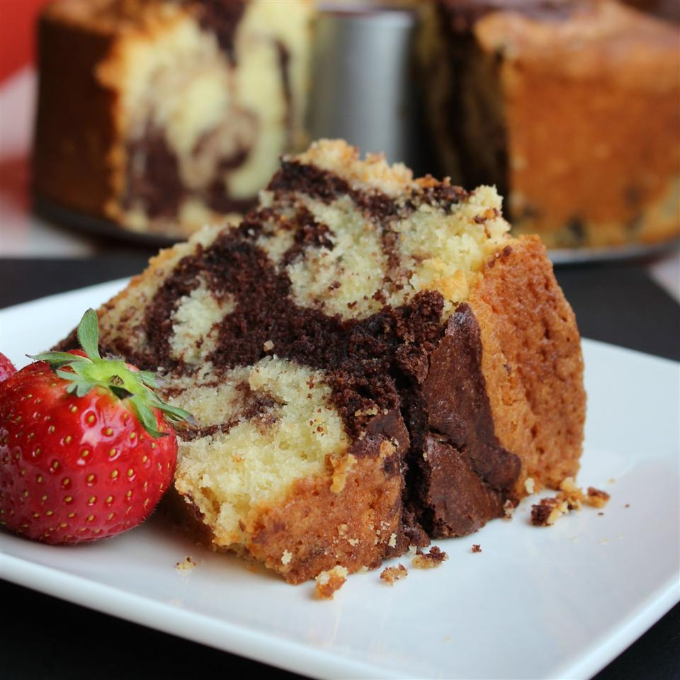

Chocolate Swirl Pound Cake recpipe

Chocolate swirld pound cake is a classic childhood cooking memory. Whether using lurid colours for a psychedelic finish, or just
chocolate and vanilla, it's a teatime treat.
The recipe takes about 1 hour and 45 minutes to complete, 1 hours and 30 minutes of which are spent cooking and yields 1 large cake (12 servings).
- 1½ cups unsalted butter, at room temperature
- 1 (8 ounce) package cream cheese, at room temperature
- 3 cups white sugar
- 1½ teaspoons almond extract
- 1½ teaspoons vanilla extract
- 1 teaspoon salt
- 1 teaspoon baking powder
- 6 large eggs, at room temperature
- 3 cups cake flour
- ⅓ cup unsweetened cocoa powder
-
Preheat oven to 325 degrees F (165 degrees C). Grease and flour a 10-inch tube pan.
-
Beat butter and cream cheese together in a bowl using an electric mixer until well combined. Add sugar and beat until fluffy, 3 to 4 minutes. Mix almond extract, vanilla extract, salt, and baking powder into creamed mixture; beat in 2 eggs. Add 1 cup flour and mix well. Add 2 eggs and mix well. Add 1 cup flour and mix well. Add last 2 eggs and mix well. Add remaining 1 cup flour and mix until batter is smooth.
-
Remove 2 cups batter and place in a separate bowl; stir in cocoa powder. Pour 1/2 of the plain batter into the prepared pan; add 1/2 of the chocolate batter and swirl with a knife. Repeat with remaining plain batter and chocolate batter, swirling gently.
-
Place pan in the middle rack of the preheated oven; bake until a toothpick inserted in the center comes out clean, about 90 minutes.